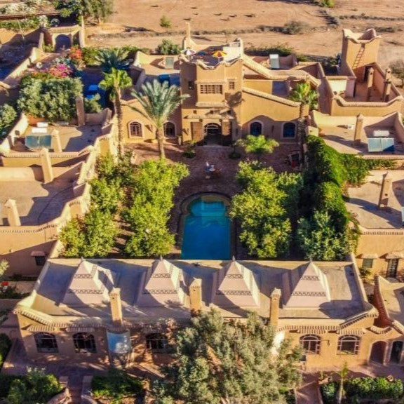
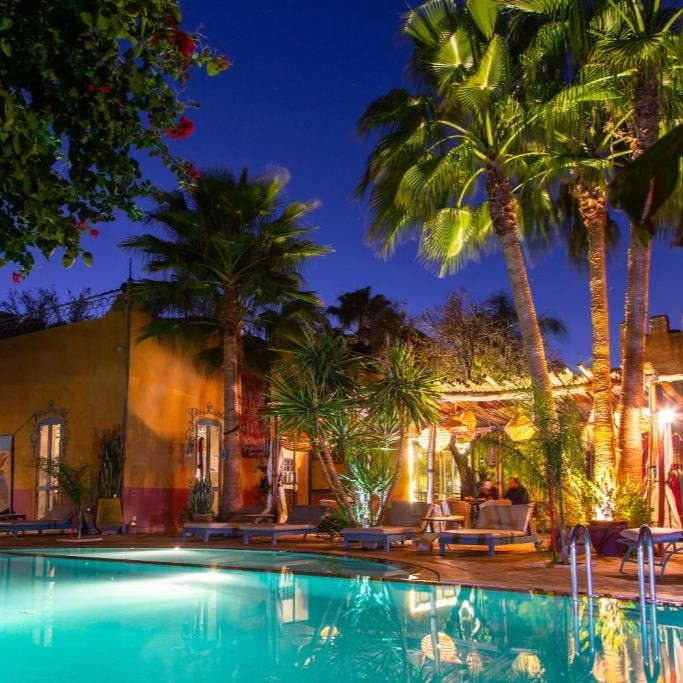
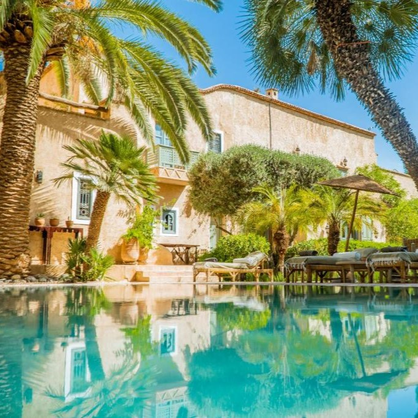

Riad Jnane Ines

Le Riad Jnane Ines à Taoudant séduit par son grand jardin avec citronniers, sa piscine et ses
suites
marocaines élégantes. Certaines offrent jacuzzi ou terrasse avec vue panoramique, parfait pour
se
détendre. Spa, hammam et cuisine traditionnelle font de chaque séjour une expérience authentique
et
relaxante.
Dar Tourkia

Dar Tourkia séduit par son ambiance traditionnelle avec salon marocain, cheminée et home cinéma pour
des moments conviviaux. Profitez du hammam, des massages et des soins de beauté pour un séjour
relaxant. Le restaurant sert des spécialités locales, idéal pour découvrir les saveurs authentiques
de la région.
La Maison Taroudant

Cet hôtel 4 étoiles allie confort moderne et services pratiques avec chambres climatisées,
coffre-fort et salle de bains équipée. Profitez du billard, d’un petit-déjeuner végétarien,
végétalien ou halal, et d’un personnel attentif disponible 24h/24. Idéal pour un séjour relaxant
avec des activités ludiques sur place.